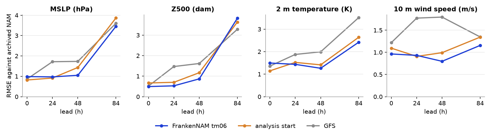
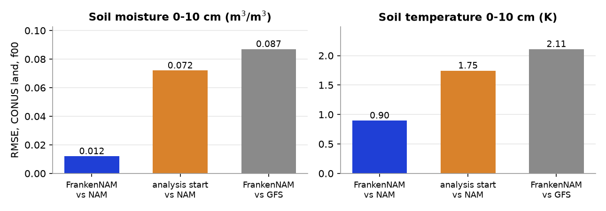
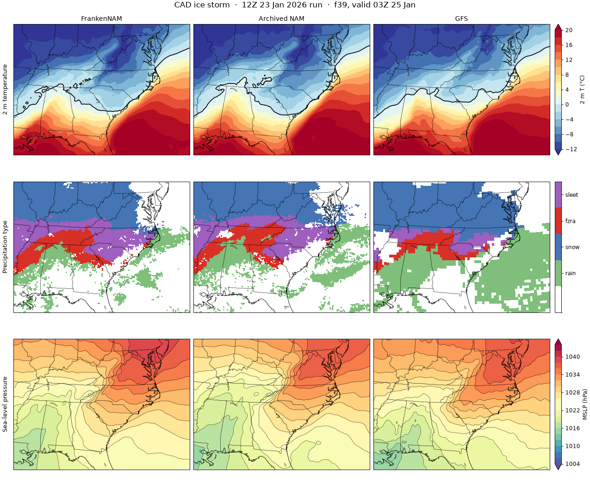
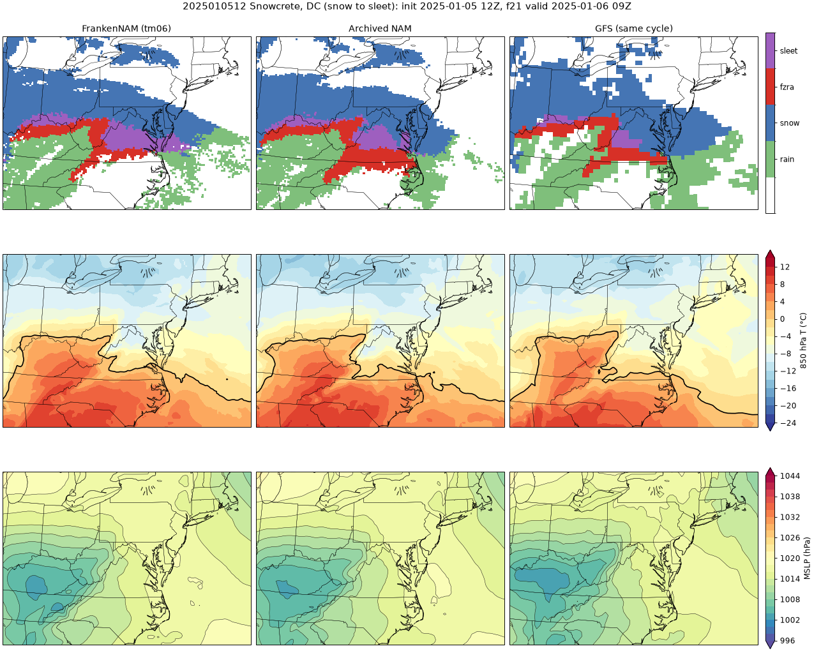
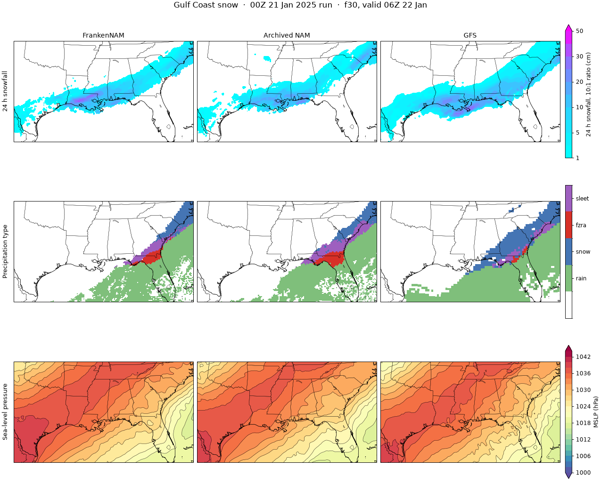
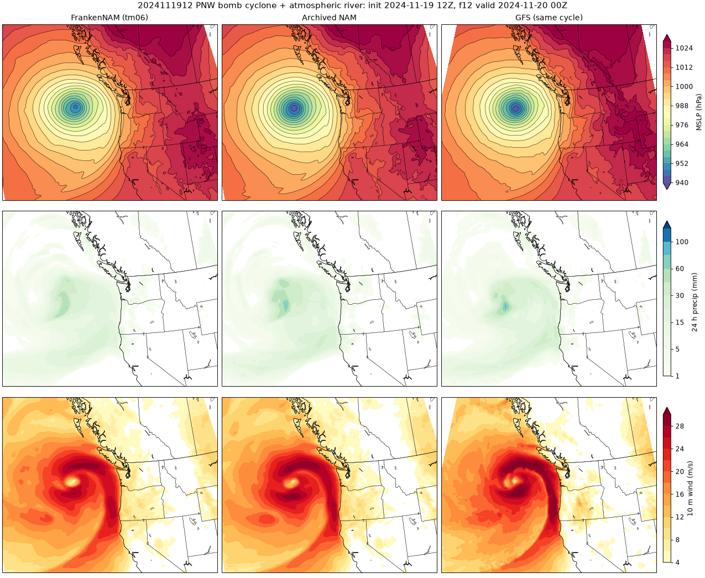

Validation
How closely FrankenNAM follows the archived operational NAM, with the GFS alongside for context.
The question here is fidelity to the NAM: does FrankenNAM look and behave like the model forecasters relied on? It is not a claim that FrankenNAM beats any other model. Every number below says which case it comes from; one case is one case.
Fidelity to the archived NAM
RMSE / bias of each run against the archived NAM, over CONUS land on a 0.25° grid, for the 2026-11-01 00Z cycle. “FrankenNAM” is the product. Its f00 is the FrankenNAM analysis: the GFS analysis from 6 h earlier carried forward by 6 h of NAM spin-up (the “tm06” start). No observations are assimilated. “Cold start” is a test run started straight from the same-cycle GFS analysis; it was made before the soil fix below and was not rerun. Lowest RMSE in each row is shaded.
FrankenNAM here is the rerun with the frozen-soil fix (7 November 2026), recomputed from the new products. The WOOF-NAM and GFS columns are unchanged.
WOOF-NAM is a separate project that rewrote the NAM for GPUs in single precision. We ran it ourselves on this case (version 0.1.3, commit 49f2742) with the same 6 h-early start from the GFS analysis as FrankenNAM, and its default boundaries, which come from the GFS run 6 h older than FrankenNAM’s. It took 59 minutes on one GPU. Its 60–84 h precipitation is missing because our copy of that output file was damaged. One case: the WOOF-NAM project may score differently on others.
| Field | Lead | FrankenNAM | Cold start | GFS | WOOF-NAM |
|---|---|---|---|---|---|
| MSLP (hPa) | f00 | 0.98 / -0.67 | 0.82 / -0.53 | 0.86 / -0.56 | 1.14 / -0.79 |
| MSLP (hPa) | f24 | 0.97 / +0.17 | 0.92 / -0.02 | 1.72 / -0.89 | 0.95 / +0.09 |
| MSLP (hPa) | f48 | 1.05 / +0.46 | 1.44 / +0.47 | 1.73 / -0.51 | 1.00 / +0.12 |
| MSLP (hPa) | f84 | 3.55 / +1.25 | 3.87 / -0.06 | 3.60 / -1.72 | 2.44 / +0.65 |
| Z500 (dam) | f00 | 0.49 / -0.36 | 0.67 / -0.58 | 0.52 / -0.38 | 0.62 / -0.51 |
| Z500 (dam) | f24 | 0.53 / -0.16 | 0.70 / -0.21 | 1.47 / -0.76 | 0.54 / -0.05 |
| Z500 (dam) | f48 | 0.86 / -0.12 | 1.17 / +0.07 | 1.62 / -0.12 | 1.00 / -0.11 |
| Z500 (dam) | f84 | 3.80 / -0.10 | 3.64 / -0.46 | 3.29 / +0.01 | 2.42 / +0.21 |
| 2 m temperature (K) | f00 | 1.49 / +0.88 | 1.15 / -0.14 | 1.36 / -0.31 | 1.59 / +0.87 |
| 2 m temperature (K) | f24 | 1.44 / +0.12 | 1.52 / +0.31 | 1.88 / -0.11 | 1.48 / +0.32 |
| 2 m temperature (K) | f48 | 1.26 / +0.02 | 1.41 / +0.34 | 1.99 / +0.15 | 1.40 / +0.29 |
| 2 m temperature (K) | f84 | 2.46 / -0.44 | 2.64 / +0.10 | 3.52 / +1.50 | 2.08 / +0.01 |
| 10 m wind speed (m/s) | f00 | 0.96 / +0.55 | 1.09 / +0.45 | 1.22 / +0.58 | 1.05 / +0.63 |
| 10 m wind speed (m/s) | f24 | 0.93 / +0.02 | 0.91 / +0.03 | 1.77 / +0.31 | 0.96 / +0.08 |
| 10 m wind speed (m/s) | f48 | 0.78 / +0.03 | 0.99 / +0.09 | 1.80 / +0.50 | 0.87 / -0.02 |
| 10 m wind speed (m/s) | f84 | 1.18 / -0.06 | 1.34 / +0.01 | 1.35 / -0.29 | 1.00 / -0.05 |
| 24 h precip, 0-24 h (mm) | f24 | 6.72 / -0.34 | 6.41 / -0.62 | 6.61 / -0.59 | 6.66 / -0.35 |
| 24 h precip, 24-48 h (mm) | f48 | 4.80 / -0.27 | 5.16 / -0.47 | 6.77 / +0.09 | 5.96 / -0.13 |
| 24 h precip, 60-84 h (mm) | f84 | 9.32 / -0.66 | 9.57 / +0.20 | 9.72 / -0.25 | n/a |
? how to read this
docs/figs/tm06/stats.md). One case.
? what this shows
Land state: the soil trace

? what this shows
What the NAM itself scored
For scale: the operational NAM against observations (ASOS/AWOS stations, MRMS 24 h precipitation), with the GFS beside it, over seven cases chosen for weather. The NAM and the same-cycle GFS are tied on temperature and wind, and the GFS has the higher precipitation score. The fidelity target for FrankenNAM is the NAM's column, not the GFS's.
| Against observations, 12-84 h, CONUS | NAM (archived) | GFS (same cycle) | GFS (6 h older) |
|---|---|---|---|
| 2 m temperature RMSE (K) | 2.72 | 2.72 | 2.77 |
| 2 m dew point RMSE (K) | 3.06 | 3.07 | 3.12 |
| 10 m wind speed RMSE (m/s) | 2.13 | 2.12 | 2.13 |
| 24 h precipitation ETS, 2.5 mm | 0.536 | 0.567 | 0.553 |
| 24 h precipitation ETS, 10 mm | 0.496 | 0.545 | 0.525 |
| 24 h precipitation ETS, 25 mm | 0.353 | 0.391 | 0.374 |
? how this was made
Side by side with the archived NAM
FrankenNAM (left) and the archived NAM (right): same field, forecast hour and colour scale. Cycle 2026-11-01 00Z. Drag the slider or press play to step through f00 to f84.


Five hindcast cases
Five cases, run as hindcasts with the frozen-soil fix: the autumn case above and four winter or storm cases forecasters know. Each is compared with the archived NAM and the GFS, against observations (ASOS/AWOS stations, MRMS 24 h precipitation). The cases were picked for their weather, not as a random sample, and there are no significance tests.
The gate: how close to the NAM
Pooled over the five cases, 12–84 h, CONUS. The margins ask that FrankenNAM be within 0.1 K (or 0.1 m/s) of the NAM’s RMSE and within 0.03 of its precipitation ETS.
| Measure, 12-84 h, CONUS, five cases pooled | FrankenNAM | NAM (archived) | GFS (same cycle) | GFS (6 h older) | Within the fidelity margin |
|---|---|---|---|---|---|
| 2 m temperature RMSE (K) | 2.80 | 2.70 | 2.72 | 2.77 | Yes: +0.09 K (margin 0.1) |
| 2 m dew point RMSE (K) | 3.34 | 3.04 | 3.03 | 3.07 | No: +0.31 K (margin 0.1) |
| 10 m wind speed RMSE (m/s) | 2.06 | 2.08 | 2.08 | 2.08 | Yes: −0.02 m/s (margin 0.1) |
| 24 h precipitation ETS, 2.5 mm | 0.552 | 0.566 | 0.604 | 0.585 | Yes: −0.015 (margin 0.03) |
| 24 h precipitation ETS, 10 mm | 0.510 | 0.510 | 0.573 | 0.549 | Yes: +0.000 (margin 0.03) |
| 24 h precipitation ETS, 25 mm | 0.325 | 0.347 | 0.390 | 0.371 | Yes: −0.023 (margin 0.03) |
2 m temperature and wind are inside the margin, as is precipitation against the NAM. FrankenNAM trails the GFS by 0.03–0.05 ETS in precipitation; the NAM does too. Before the soil fix the 2 m temperature gap was +0.24 K, outside the margin.
Dew point is too dry. FrankenNAM’s 2 m dew point has a bias of −0.48 K against stations, pooled; the NAM’s is +0.01 K. The RMSE is 0.31 K worse than the NAM’s, outside the 0.1 K margin. It is worst in the first 24 h (RMSE 2.99 against 2.58 K) and in the Gulf Coast and PNW cases, and in the CAD case it fades by about f60. It was there before the soil fix, so it is a separate problem. The cause is under investigation.
By case
FrankenNAM RMSE minus the NAM’s against stations, 12-84 h (K, K, m/s). Before the fix in brackets.
| Case | 2 m T | 2 m Td | 10 m wind |
|---|---|---|---|
| 2026-11-01 00Z, autumn | +0.06 (+0.04) | +0.17 (+0.16) | −0.05 (−0.05) |
| 2026-01-23 12Z, CAD ice storm | +0.04 (+0.42) | +0.26 (+0.48) | +0.03 (+0.04) |
| 2025-01-05 12Z, Snowcrete | +0.03 (+0.17) | +0.01 (−0.06) | +0.00 (+0.01) |
| 2025-01-21 00Z, Gulf Coast snow | +0.20 (+0.39) | +0.60 (+0.43) | +0.03 (+0.05) |
| 2024-11-19 12Z, PNW bomb cyclone | +0.11 (+0.12) | +0.38 (+0.38) | −0.10 (−0.10) |
? how to read the by-case table
docs/phase1-scorecard.md.Frozen soil
Before the fix FrankenNAM started with almost no ice in the soil, because of a bug in NOAA’s own preprocessor (patch nps-02). After it, the frozen share matches the NAM’s at the start in every case and stays close through f84.
Share of the 0-10 cm soil water that is frozen, over cold land (0-10 cm soil below −2 °C), grid 218.
| Case | f00: NAM | f00: before fix | f00: after fix | f48: NAM | f48: before fix | f48: after fix |
|---|---|---|---|---|---|---|
| 2026-11-01 | 0.645 | 0.008 | 0.642 | 0.640 | 0.316 | 0.646 |
| 2026-01-23 | 0.664 | 0.047 | 0.671 | 0.643 | 0.286 | 0.643 |
| 2025-01-05 | 0.638 | 0.024 | 0.642 | 0.630 | 0.189 | 0.629 |
| 2025-01-21 | 0.656 | 0.014 | 0.657 | 0.649 | 0.199 | 0.650 |
| 2024-11-19 | 0.582 | 0.056 | 0.589 | 0.561 | 0.359 | 0.560 |
Features
Four cases, judged on the event the NAM is known for. The soil fix changed surface temperature and soil, not these features. CAD, Snowcrete and Gulf Coast snow pass. The PNW case is partial: the low is about 6 hPa too weak at f12.
CAD ice storm
23 Jan 2026, Georgia and the Carolinas

- Freezing rain and sleet cover 295k km² at f39, the same as the NAM; the sub-freezing wedge is 393k km² against the NAM’s 397k.
- Gate: pass. The soil fix took this case’s 2 m temperature error against the NAM from +0.42 K to +0.04 K.
Snowcrete
5 Jan 2025, Washington DC, snow to sleet

- Snow, sleet and freezing rain pattern at f21 as before: 130k, 66k and 16k km² against the NAM’s 153k, 41k and 45k. By f36 it is snow in both.
- Gate: pass. The pattern is the NAM’s, with a little more sleet and less freezing rain.
Gulf Coast snow
21 Jan 2025

- Heaviest 24 h snow is 32.2 cm at f30, heavier than the NAM’s 23.6 cm, and 20.9 cm at f42, lighter than its 23.6 cm.
- Gate: pass on features. This case has the largest 2 m temperature gap (+0.20 K) and a dry dew-point bias (see the dew-point note below).
PNW bomb cyclone
19 Nov 2024, with an atmospheric river

- The low is 946.9 hPa at f12 and 954.1 at f24, about 6 and 4 hPa weaker than the NAM’s 941.0 and 950.3. The track is within 0.2°.
- Gate: partial. The low is too weak and mountain precipitation is drier; the dew-point dry bias is largest here.